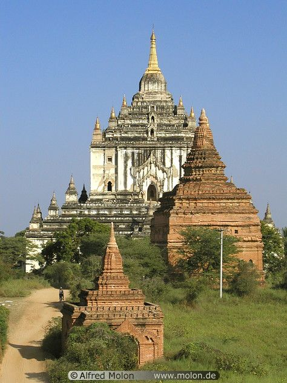

ပုဂံမြို့တော် သမိုင်းအကျဥ်းချုပ်
မြန်မာရာဇဝင်များ အဆိုအရ ပုဂံကို အေဒီ ဒုတိယရာစုတွင် တည်ထောင်ခဲ့ပြီး အေဒီ ၈၄၉ တွင် ပျဉ်းမဘုရင်က ခိုင်ခံ့သောပုဂံကို ရှေးဦးတည်သူ၏ ၃၄ ဆက်ခံသူ ဖြစ်သည်။ ပင်မပညာတော်သင်ဆုသည် ပုဂံကို နန်ဇောမင်းလက်ထက် မကြာသေးမီကမှ ဧရာဝတီချိုင့်ဝှမ်းသို့ ဝင်ရောက်ခဲ့သော မြန်မာ (ဗမာ) မှ ၉ ရာစု အလယ်ပိုင်းမှ နှောင်းပိုင်းတွင် တည်ထောင်ခဲ့သည်ဟု ဆိုပါသည်။ ၁၀ ရာစုနှောင်းပိုင်းအထိ ဗမာလူမျိုးများ အခြေချနေထိုင်မှု အာဏာနှင့် ကြီးကျယ်ခမ်းနားစွာ ကြီးထွားလာချိန်အထိ ပြိုင်ဖက် ပျူမြို့ပြနိုင်ငံ အများအပြားတွင် ပါဝင်ခဲ့သည်။ယနေ့ပုဂံသည် သပိတ်မှောက်မှုအမျိုးမျိုးကို ကာလရှည်ကြာ ပစ်မှတ်ထားခဲ့သည့် မြန်မာနိုင်ငံ၏ အခြေတည်သော ခရီးသွား လုပ်ငန်းတွင် အဓိက ခရီးသွားနေရာတစ်ခုဖြစ်သည်။ နောက်နှစ်များအတွင်း ခရီးသွားလုပ်ငန်းတွင် အနည်းငယ်မျှသာ တက်လာသည့်တိုင် မြို့တော်၏ အသေးစား ခရီးသွားအခြေခံအဆောက်အအုံသည် လျင်မြန်စွာ တိုးချဲ့ရမည်ဟု မြန်မာစာပေထုတ်ဝေသူ အများအပြားက မှတ်သားထားကြသည်။2019 ခုနှစ် ဇူလိုင်လ 6 ရက်နေ့တွင် ပုဂံမြို့ကို UNESCO မှ ကမ္ဘာ့အမွေအနှစ်စာရင်းဝင်အဖြစ် တရားဝင်သတ်မှတ်ခြင်းခံခဲ့ရပြီး 1995 ခုနှစ်တွင် တပ်မတော်အစိုးရမှ ပထမဆုံးအမည်စာရင်းတင်သွင်းခဲ့သည့် 43 ကြိမ်မြောက် ကမ္ဘာ့အမွေအနှစ်ကော်မတီအစည်းအဝေးတွင် 24 နှစ်အကြာတွင် ပုဂံကို ကမ္ဘာ့အမွေအနှစ်စာရင်းဝင်အဖြစ် တရားဝင်သတ်မှတ်ခဲ့သည်။ ယင်းကြောင့် ပုဂံသည် ပျူရှေးဟောင်းမြို့များပြီးရင် မြန်မာနိုင်ငံတွင် ဒုတိယမြောက် ကမ္ဘာ့အမွေအနှစ်နေရာ ဖြစ်လာစေပါသည်။ ပုဂံ ကမ္ပည်း ရေးထိုးခြင်းဆိုင်ရာ စံနှုန်းများ အရ မြန်မာနိုင်ငံ အစိုးရက ရှေးဟောင်း သုတေသနဇုန်ရှိ ဟိုတယ်များကို သီးသန့် ဟိုတယ်ဇုန်အဖြစ် 2020 ခုနှစ်တွင် ပြောင်းရွှေ့ သွားရန် ကတိပြုထားသည်။
ပထဝီဝင် မြေအနေအထား
ပုဂံရှေးဟောင်းသုတေသနဇုန်သည် မြောက်ဘက်တွင် ညောင်ဦးနှင့် တောင်ဘက်တွင် ပုဂံသစ်တို့ပါ၀င်သော 13 ကီလိုမီတာ× 8 ကီလိုမီတာ (8.1 မိုင်× 5.0 မိုင်) အကျယ်အဝန်း (8.1 မိုင်× 5.0 မိုင်) ဧရိယာအဖြစ် သတ်မှတ်ထားသော၊ မြန်မာနိုင်ငံ အထက်ပိုင်းဧရာဝတီမြစ်ကွေ့။ မန္တလေးမြို့၏ အနောက်တောင်ဘက် ၂၉၀ ကီလိုမီတာ (၁၈၀ မိုင်) နှင့် ရန်ကုန်မြို့၏ မြောက်ဘက် ၇၀၀ ကီလိုမီတာ (၄၃၀ မိုင်) အကွာတွင် တည်ရှိသည်။
ရာသီဥတု
ပုဂံသည် မြန်မာပြည်၏ အပူပိုင်းဇုန်အလယ်တွင်ရှိပြီး မြောက်ဘက်တွင် ရွှေဘိုနှင့် တောင်ဘက်တွင် ပြည်လမ်းကြားတွင် တည်ရှိသည်။ နှစ်စဉ်မုတ်သုံမိုးရေချိန် 2,500 မီလီမီတာ (98 in) ထက်ကျော်လွန်သော မုတ်သုံမိုးရေချိန် 2,500 မီလီမီတာ (98 in) ထက်ကျော်လွန်သော နိုင်ငံ၏ ကမ်းရိုးတန်းဒေသများနှင့် မတူဘဲ အနောက်ဘက်ရှိ ရခိုင်ရိုးမတောင်တန်းမှ မိုးရွာသွန်းမှုကြောင့် မိုးနည်းပါသည်။
စီးပွားရေး အခြေအနေ
ပုဂံ၏စီးပွားရေးသည် ခရီးသွားလုပ်ငန်းကို အဓိကအခြေခံသည်။ ယခင်စစ်အစိုးရကို သပိတ်မှောက်မှုများကြောင့် ပုဂံဒေသ၏ ခရီးသွားလာရေး အခြေခံအဆောက်အအုံသည် နိုင်ငံတကာစံနှုန်းဖြင့် နိမ့်ကျနေသေးသည်။ မြို့တော်တွင် နိုင်ငံတကာအဆင့်မီ ဟိုတယ်အနည်းငယ်နှင့် မိသားစုသုံး တည်းခိုခန်းများစွာရှိသည်။ ပုဂံသည် မြန်မာ့ယွန်းထည်လုပ်ငန်း၏ အချက်အချာကျသော အချက်အချာကျသော နေရာဖြစ်ပြီး ခရီးသွားများ ၀ယ်လိုအားပေါ်တွင် များစွာမူတည်နေသည်။ ယွန်းထည်အများစုကို ရန်ကုန်မြို့ရှိ အမှတ်တရပစ္စည်းအရောင်းဆိုင်များနှင့် ကမ္ဘာ့ဈေးကွက်များသို့ ဦးတည်ထားသည်။ ထို့အပြင် ယွန်းထည်ပြုလုပ်သည့် လုပ်ငန်းစဉ်ကိုယ်တိုင်ကလည်း ခရီးသွားဆွဲဆောင်မှုတစ်ခု ဖြစ်လာခဲ့သည်။
လူဦးရေ
ပုဂံ၏ အထွတ်အထိပ်ကာလတွင် လူဦးရေမှာ ၅၀,၀၀၀ မှ ၂၀၀,၀၀၀ ကြားရှိမည်ဟု ခန့်မှန်းရသည်။ ၁၉၉၀ ပြည့်လွန်နှစ်များအတွင်း ခရီးသွား လုပ်ငန်း ထွန်းကားလာချိန်အထိ ရွာသား အနည်းငယ်မျှသာ ပုဂံဟောင်းတွင် နေထိုင်ခဲ့ကြသည်။ ခရီးသွားလာမှု မြင့်တက်လာခြင်းကြောင့် ထိုဒေသသို့ လူဦးရေ များပြားလာခဲ့သည်။ ပုဂံဟောင်းသည် ယခုအခါ အမြဲတမ်းနေထိုင်ရန် အကန့်အသတ်မရှိသောကြောင့် လူဦးရေအများစုသည် ပုဂံဟောင်း၊ ပုဂံ၏တောင်ဘက်၊ သို့မဟုတ် ပုဂံဟောင်း၏မြောက်ဘက်၊ ညောင်ဦးတို့တွင် နေထိုင်ကြသည်။ ဒေသခံအများစုမှာ ဗမာလူမျိုးများဖြစ်သည်။
ဓမ္မရံကြီး ဘုရား
ဓမ္မရံကြီးဘုရားသည် မြန်မာနိုင်ငံ ပုဂံတွင် တည်ရှိသည်။ ပုဂံရှိ ဘုရားကျောင်းများထဲတွင် အကြီးဆုံးဖြစ်သည့် နရသူမင်း လက်ထက်တွင် လူသိများသော ဓမ္မယာန် စေတီကို တည်ဆောက်ခဲ့သည်။ ခမည်းတော် အလောင်းစည်သူနှင့် အစ်ကိုကြီးတို့ကို လုပ်ကြံသတ်ဖြတ်ခြင်းဖြင့် ထီးနန်းရလာသော နာရသူသည် သူ၏အပြစ်များအတွက် အပြစ်ဖြေရန် ဤအကြီးဆုံးဘုရားကျောင်းကို တည်ဆောက်ခဲ့သည်ဟု ယူဆရသည်။ ဓမ္မယန်းကြီးဘုရားသည် ပုဂံတွင် အကျယ်ဆုံးဘုရားကျောင်းဖြစ်ပြီး အာနန္ဒာဘုရား၏ ပုံစံအတိုင်း တည်ဆောက်ထားသည်။ ဗိမာန်တော် ဆောက်လုပ်ဆဲကာလတွင် အိန္ဒိယလူမျိုးအချို့ လုပ်ကြံခံရပြီး နန်းတော်မပြီးပြတ်ဟု မြန်မာရာဇဝင်များတွင် ဖော်ပြထားသည်။ Sinhalese သတင်းရင်းမြစ်များက ဘုရင်အား ဆင်ဟာလီကျူးကျော်သူများ၏ သတ်ဖြတ်ခြင်းကို ခံခဲ့ရကြောင်း ဖော်ပြသည်။ ဗိမာန်တော်အတွင်းပိုင်းကို အမည်မသိအကြောင်းပြချက်ဖြင့် အုတ်စီထားသောကြောင့် မုတ်လေးခုနှင့် အပြင်စင်္ကြံများသာ ဝင်ရောက်နိုင်သည်။
သဗ္ဗညု ဘုရား
သဗ္ဗညုဘုရား ကျောင်းတော်သည် ယူနက်စကို၏ ကမ္ဘာ့အမွေအနှစ်နေရာတစ်ခုဖြစ်သော ပုဂံရှေးဟောင်းသုတေသနနယ်မြေတွင် အထိမ်းအမှတ်အဖြစ် အသိအမှတ်ပြုခံရပါသည်။ ၁၁၅၀-၅၁ ခုနှစ် စည်သူမင်း လက်ထက်တွင် တည်ဆောက်ပြီးစီးခဲ့သော ဘုရားကျောင်းသည် ပုဂံခေတ်၏ "ဆန်းသစ်သော ဗိသုကာလက်ရာနှင့် အနုပညာဖန်တီးမှု" နှင့် "မိမိကိုယ်ကို ယုံကြည်မှုရှိသော မြန်မာလူမျိုးတို့၏ ဇာတိမာန်ကို ဖော်ပြခြင်း" ကို ထင်ဟပ်စေသည်။" 66 m (217 ft) ၊ ငါးထပ်သတ္တဖြူညိုသည် ပုဂံရှိ အမြင့်ဆုံးကျောင်းတော်အဖြစ် လူသိများပြီး မီတာ 100 (328 ပေ) မြင့်သော ပုဂံရှိ အမြင့်ဆုံးသော စေတီတော်ဖြစ်သည်။ ပုဂံမင်းဆက် ၁၁၄၄/၄၅ တွင် စည်သူ ၁ မှ သထုံမြို့ဟောင်း မြို့ရိုး၏ အရှေ့တောင်ဘက်ထောင့်တွင် တည်ရှိသည်။ ရာဇဝင် ရာဇဝင်များ အရ ရွှေဂူကြီး ဘုရားကျောင်း ပြီးနောက် ဘုရင့် ဒုတိယ မြောက် အဓိက ဘုရားကျောင်း ဆောက်လုပ် မှု ဖြစ်ပြီး၊ ဘုရင် သည် ပတ္တမြား လှေတော် များကို ဘုရားကျောင်း နှစ်ခု စလုံးသို့ လှူဒါန်း ခဲ့သည်ဟု ဆိုသည်။ ဘုရားကျောင်းသည် ၁၉၇၅ နှင့် ၂၀၁၆ ခုနှစ် ငလျင်ဒဏ်ကြောင့် ဆိုးရွားစွာ ပျက်စီးခဲ့သည်။ ၎င်းကို တရုတ်နည်းပညာနှင့် ငွေကြေးအကူအညီဖြင့် ပြန်လည်ပြုပြင်ခြင်းလုပ်ငန်းများ လုပ်ဆောင်နေပါသည်။ ပြန်လည်ထူထောင်ရေး လုပ်ငန်းသည် 2028 ခုနှစ်ခန့်အထိ ကြာမြင့်မည်ဟု ခန့်မှန်းထားသည်။
အာနန္ဒာ ဘုရား
အာနန္ဒာဘုရားသည် ပုဂံမင်းဆက် ကျန်စစ်သားမင်း (၁၀၈၄-၁၁၁၂/၁၃) လက်ထက် အေဒီ ၁၁၀၅ တွင် တည်ခဲ့သော ဗုဒ္ဓဘုရားကျောင်းဖြစ်သည်။ စေတီတော်၏ အသွင်အပြင်သည် လက်ဝါးကပ်တိုင်ပုံစံဖြစ်ပြီး မြန်မာနိုင်ငံရှိ ဘုရားအားလုံးနီးပါးတွင် တွေ့ရသော ထီးတော် သို့မဟုတ် ထိပ်အဆင်တန်ဆာဟု ခေါ်သည့် ထီးတော်ဖြင့် ထိပ်တွင် စေတီငယ်တစ်ခုဆီသို့ ဦးတည်သွားသော လှေကားထစ်အများအပြားပါရှိသည့် လက်ဝါးကပ်တိုင်ပုံစံဖြစ်သည်။ ဗုဒ္ဓဘာသာဘုရားကျောင်းတွင် မတ်တပ်ရပ် ဗုဒ္ဓရုပ်ပွားတော် လေးဆူကို စီစစ်ကာ အရှေ့၊ မြောက်၊ အနောက်နှင့် တောင်ဘက်သို့ မျက်နှာမူထားသည်။ ဗိသုကာလက်ရာများသည် မွန်တို့၏ ရောနှောမှုနှင့် အိန္ဒိယပုံစံ ဗိသုကာလက်ရာများကို လက်ခံကျင့်သုံးသည့် ဗိသုကာလက်ရာတစ်ခုဟု ဆိုကြသည်။ အထင်ကြီးစရာကောင်းသော ဘုရားကျောင်းကို "Westminster Abbey of Burma" ဟုလည်း ခေါင်းစဉ်တပ်ထားသည်။အဆိုပါဘုရားကျောင်းသည် 10th-11th ရာစု Pathothamya ဘုရားကျောင်းနှင့်အနီးကပ်ဆင်တူပြီး "မှန်ကန်သောကျောက်များပြတိုက်" ဟုလည်းလူသိများသည်။